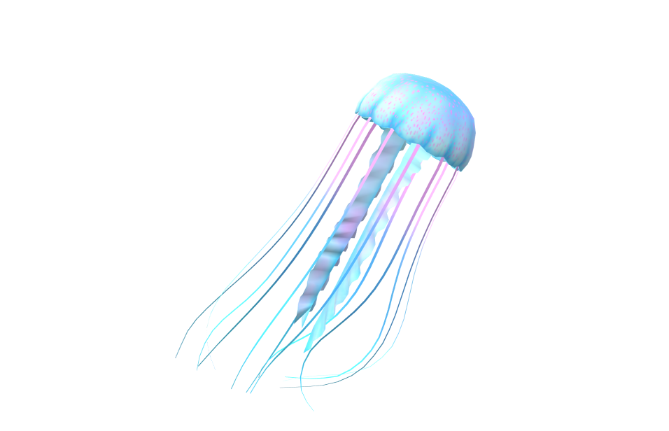
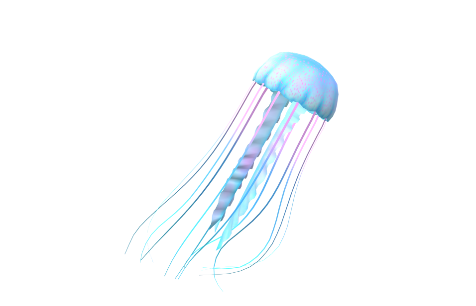
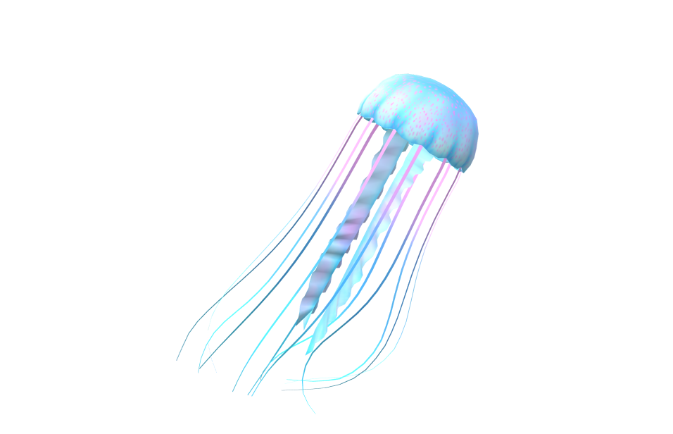

H βιολογία των ζώων, γνωστή και ως ζωολογία, είναι o κλάδος της βιολογίας που μελετά τα ζώα. Εξετάζει την ταξινόμηση, τη φυσιολογία, την ανατομία, την ανάπτυξη, την εξέλιξη, τη συμπεριφορά και την οικολογία τους.
Ταξινόμηση:
Η ζωολογία ταξινομεί τα ζώα σε διάφορες κατηγορίες (φύλα, τάξεις, οικογένειες, γένη, είδη) με βάση τα κοινά χαρακτηριστικά τους.
Φυσιολογία:
Μελετά τις λειτουργίες των ζώων, όπως η πέψη, η αναπνοή, η κυκλοφορία του αίματος και η αναπαραγωγή.
Ανατομία:
Εξετάζει την εσωτερική και εξωτερική δομή των ζώων.
Ανάπτυξη:
Μελετά την ανάπτυξη των ζώων από τη σύλληψη μέχρι τον θάνατο, συμπεριλαμβανομένης της εμβρυολογίας.
Εξέλιξη:
Διερευνά την προέλευση και την εξέλιξη των ζώων μέσω της φυσικής επιλογής και άλλων εξελικτικών μηχανισμών.
Συμπεριφορά:
Εξετάζει τις αντιδράσεις των ζώων στο περιβάλλον τους, τόσο σε ατομικό όσο και σε κοινωνικό επίπεδο.
Οικολογία:
Μελετά τις σχέσεις των ζώων με το περιβάλλον τους και με άλλα ζώα και φυτά.
Tα ζώα είναι πολυκύτταροι ευκαρυωτικοί( έχουν δηλαδή πυρήνα που περικλείει το DNA τους) οργανισμοί oι οποίοι σχηματίζουν ιδιαίτερο βασίλειο με την επιστημονική ονομασία Animalia. Κατά κανόνα τα περισσότερα ζώα είναι ετερότροφα,( τρώνε δηλαδή άλλους οργαννισμούς)αναπνέουν οξυγόνο, μπορούν να κινούνται, αναπαράγονται εγγενώς και κατά την πρώιμη εμβρυϊκή ανάπτυξή τους σχηματίζουν μία κοίλη σφαίρα κυττάρων, το βλαστίδιο. Έχουν περιγραφεί περισσότερα από 1,5 εκατομμύρια αρτίγονα είδη ζώων—εκ των οποίων περίπου το 1 εκατομμύριο είναι έντομα—αλλά υπολογίζεται ότι συνολικά ξεπερνούν τα 7 εκατομμύρια. Το μήκος των ζώων κυμαίνεται από 8,5 χιλιοστόμετρα έως 33,6 μέτρα. Παρουσιάζουν πολύπλοκες αλληλεπιδράσεις μεταξύ τους και με το περιβάλλον τους, δημιουργώντας περίπλοκα τροφικά πλέγματα. Η επιστήμη που μελετά τα ζώα ονομάζεται ζωολογία. 